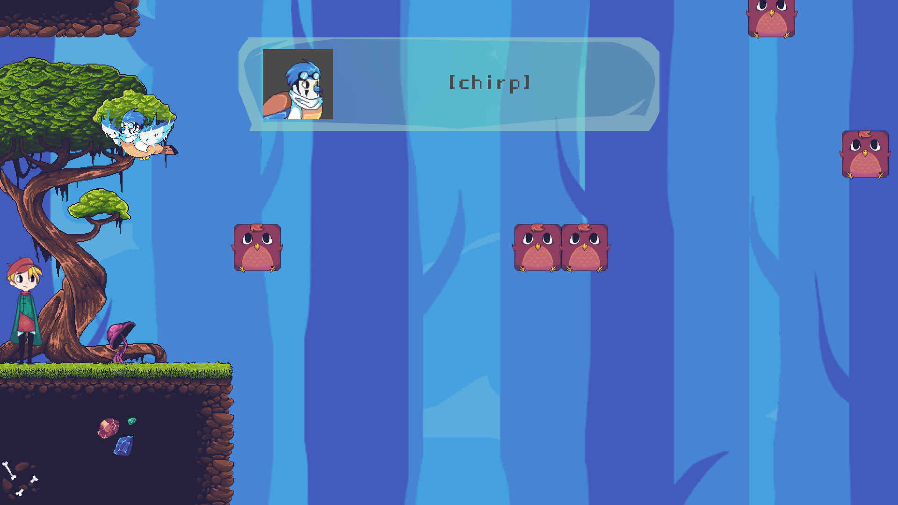
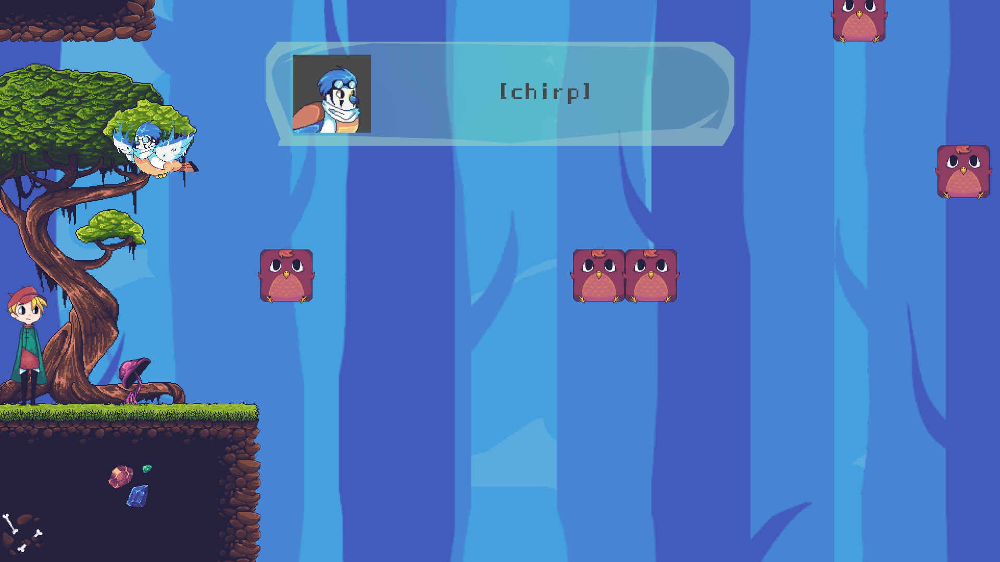

Taro and Ferdy
- Winner of Gamecelerator 5.0 game dev competition, which was co-hosted by Ubisoft
- I was responsible with programming and design, working in a team of several people
- Developed in Unity
- Ideated an unique core mechanic, and designed additional mechanics around that
- Designed levels to teach the mechanics to the player and explore the design space as much as possible
- Implemented various mechanics
Taro and Ferdy is one of my earliest projects and I'm really passionate about it. The game started as our entry to Gamecelerator 5.0, a local game dev competition. We managed to win, and as a reward we were given the privilege of working on our game in Ubisoft Bucharest's office for 3 weeks, a professional working environment.
I've solved many problems working on the game, for example, the physics between the 2 characters took several code iterations to implement seamlessly. Designing levels is also challenging, but satisfying, as I like to teach and fully explore mechanics with clever level design. Playtests were key in making tweaks, and making the game more intuitive without compromising on challenge.
 
